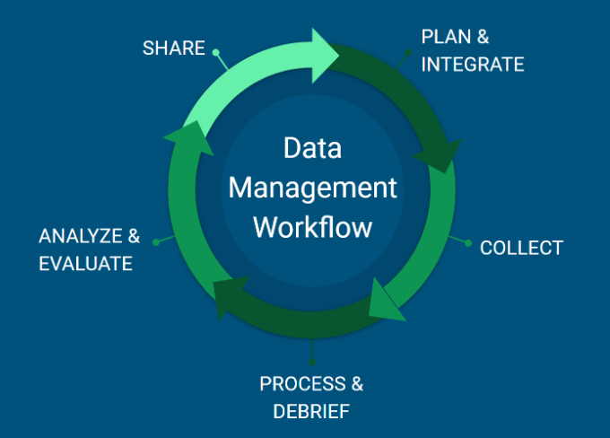

PEP Data Management Plan
This document was last updated on r Sys.Date().
Objective
Welcome to the Polar Ecosystems Program (PEP; pronounced both as P-E-P and pep) Data Management Plan. The objective of this document is to outline and implement consistent information management procedures for PEP data.
Overview
Data are our legacy. The data we collect, manage and analyze today will continue to be available and used by staff (and others) in the future. It is, therefore, important to maintain, organize and share our data in a way that will be useful and meaningful to current and future users. This includes:
Keeping files organized and up-to-date;
Storing data in machine-readable, human-readable, and tidy formats;
Documenting information about the files and the process(es) for creating the files;
Cleaning out files (and paperwork) that are not important for the future legacy of the data (e.g. intermediate files, outdated information); and
Sharing data with the public and interested partners.
Foundations to Data Management
A recently published paper in PLOS ONE, Good Enough Practices in Scientific Computing, provides a thorough overview of best practices and workflows for managing scientific data. While some of the focus is out of our scope, a few key principles in the data management section are worth focusing on:
Create the data you wish to see in the world. The original, raw data collected in the field or offloaded from sensors is rarely the data type and quality of data we would like to share with the world and have our names associated with. Data formats, data organization, column names, value data types and formats (e.g. date-time) can all be transformed and improved into higher quality forms. The better formed the data are, the easier subsequent analyses will be, the more reproducible our science will be, and the more likely it is that others will find use in our data.
Create analysis-friendly (e.g. tidy) data. In many cases, analysis-friendly data will be equivalent to the data you wish to see in the world. The key principle at play here is that of “tidy” data. Hadley Wickham’s 2014 manuscript does an excellent job outlining the ideal structure of tidy data.
The key components of tidy data are:
Each variable forms a column.
Each observation forms a row.
Each type of observational unit forms a table.
Not only are these principles important for analyzing data in programming languages (such as R or Python), they are also key components to a well-organized database. Organizing data in this way will allow easier ingestion into a database; once your data are in a central database, the more tools for exploring and analyzing your data will be available.
Record all the steps used to process data. Embracing scripts developed in a programming language (such as R or Python) is essential to providing a robust, reproducible workflow for your data. With large, complex datasets, manually processing data via mouse clicks and spreadsheet-centric workflows are often time-consuming and difficult to reproduce. As part of the planning process for the PEP data management workflow, we will evaluate existing data management processes and identify ways to simplify and automate existing or new steps.
Data Management Workflow
The figure below describes the general process that PEP will implement for managing data, start to finish and cyclically for on-going projects. This workflow consists of 7 steps, some of which occur concurrently or similarly timed yet independent of one another.
We will ultimately create a Google Drive spreadsheet that inventories the status of each project related to each of the steps in the process and associated details about the data (e.g. where it is stored, where it is shared).

**For projects that have already started or are just getting started, we will take steps to update data management and products as outlined in this document.
Plan
The NOAA Data Management Planning Procedural Directive (PD) (direct link to PDF of current version 2.0.1) requires a data management plan to be developed for all environmental data collected by NOAA programs or systems. The PD provides a generic template and guideline for developing a data management plan and a data management plan repository has been established. A common tool for developing data management plans (https://dmptool.org) has a template for NOAA. These represent a minimum requirement and, in fact, PEP data management plans will likely be more thorough. All data management plans should be developed in collaboration with the PEP data science lead (Stacie Koslovsky) and established prior to data collection.
Prior to any new data collection, work with S. Koslovsky to:
Complete and submit a data management plan;
Identify where data will be stored (both short- and long-term; and set up the workspace), what data products will be needed, and what data processing will be required;
Create storage locations on network for final data and on Google Drive/elsewhere for intermediate processing; ensure necessary staff have access to these locations;
Develop/evaluate/implement data collection strategies that facilitate and simplify data management steps that follow;
Coordinate (or at least communicate) with the AFSC OFIS team regarding network storage space needs and any other concerns;
Decide how best to organize the metadata for the project (parent vs. child, new vs. add to existing). All metadata entries within InPort will be published publicly and, eventually, used to create standards compliant alongside any open data products. A one-to-one relationship between metadata records and eventual open data products often makes this process easier.
Integrate
For on-going projects, we will incorporate feedback from the previous year’s/season’s effort to make improvements to the upcoming effort.
Collect
Field Data Collection
During field data collection, begin preliminary data management, as able:
Review datasheets for data recording errors;
Scan datasheets for backup;
Use temporary storage on external/portable drives, cloud providers, or individual government laptops to backup images, scanned datasheets and other critical files; and
Enter field data into cloud-based data entry tools.
Process
After field work is completed, our aim will be to download, process and QA/QC data as soon as possible. All data should be archived to the network no later than one month after the completion of the project.
Raw and Original Data
The AFSC network is the primary storage location for all data collected by PEP (see more details in PEP Network Folder Structure).
In practice, the transfer of data from field collection storage to the network should be the first priority upon returning from the field. Temporary storage of files on external/portable drives, cloud providers, individual government laptops should not exceed 30 days after return from the field
After data are transferred to the network, files and associated information should be reviewed for consistency.
In general, ‘raw’ or ‘original’ data collected in the field should not be altered.
In cases where the data are known to be incorrect or a more correct value is known, those files or entries should be edited.
A common occurrence is for files to not be named properly in the field. File names should be corrected at this time.
Additionally, data transcription errors can occur, and this is the appropriate time to fix those errors.
Processed and Final Data
After raw/original data are archived to the network, data should be processed and reviewed for outliers. Data entry and QA/QC should be processed and finalized within three months of the field effort, so that other efforts (e.g. image review, counting) are able to proceed in a timely manner.
The processing and review steps will vary by project, but generally:
We will use automated processes for streamlining and documenting processes whenever possible.
Custom data-entry forms and/or spatial processing templates will be created for data entry and processing when needed.
Queries and/or other data visualizations will be used to facilitate data QA/QC.
Spatial data (grid and other products) will be stored in their native projection in the database.
For many projects, this will be WGS-84.
Spatial data from outside sources (e.g. environmental data) will be stored in the original projection. This may require data to be reprojected for specific analyses or other needs.
Environmental data will be updated in the pep DB annually in August. Additional environmental data can be accessed from other data sources online. If you need help with this, contact E. Richmond or S. Koslovsky.
Backup Procedures
All data copied to the network are backed up offsite in one of two ways: snap-mirrored to another NMFS facility, tape backup delivered off site (reserved for large files that change infrequently (e.g. imagery, acoustic files, video). In addition, any data that are snap-mirrored are also backed up differentially and that allows incremental restoration (daily for 7 days, weekly for 6 months).
For many small datasets, storing the data on the AFSC network will suffice. For data that are larger or are the result of significant time, effort, or money, a more robust archival system is desirable. For NOAA environmental data, the National Centers for Environmental Information (NCEI) provides this capability. The data submission process is handled through the Send2NCEI (aka S2N) application. Very large datasets (100s of gigabytes to terabytes) will require additional coordination with NCEI data liaisons (NODC.DataOfficer@noaa.gov).
Debrief
Analyze
Part of the data workflow is to ensure the final products are easily usable and accessible for analyses. Accessing data for each analysis will be different; work with S. Koslovsky to identify the most efficient way to extract data from the DB and/or network for your needs.
Evaluate
We want to emphasize the feedback loop from analytical processes to data management. Our goal with data management is to streamline processing and extraction of information for analyses. This may be updates/improvements to data management processes over time. Feedback and communication are important for ensuring data products meet current and future analytical needs.
Data Management On-boarding
Minimum Computer Requirements
Below is a list of software required for PEP computers.
| Program | Justification |
|---|---|
| QGIS | For the most direct connection to PEP database for spatial data |
| 64-bit PostgreSQL ODBC driver | For connecting to PEP database via Microsoft Access |
| Microsoft Access 2016 | For using PEP database front-ends (this is part of the Microsoft Suite, so might already be installed by default) |
| EndNote | For accessing the PEP library |
| ACDSee | For image management (field photos and data); we also have licenses for Lightroom |
| Adobe Acrobat | For managing data and forms stored in pdf |
Below is a list of software recommended for PEP computers.
| Program | Justification |
|---|---|
| Anaconda(or miniconda) with Python>=3.6 | Lots of our tools require Python |
| R | Lots of our tools require R (and kept updated) |
| RStudio | A user-friendly GUI for R |
| ArcGIS Pro | Spatial processing and analysis |
| VLC Media Player | For video management |
Data Storage
Individual Storage Resources
No data should be stored exclusively in any of these resources.
Laptop
Google Drive
Individual Users folders on LAN
PEP PostgreSQL Database
Overview
The table below details the final data are stored in the pep PostgreSQL database.
All staff will have read-only access to all data.
Staff will only have read-write access to the data they are required to edit.
There are a number of automated scripts that will replicate and/or process data into their final product. This database should be the go-to location data anytime data are needed. Intermediate copies and/or previous exports should always be replaced to ensure you are using the most up-to-date data.
QGIS is the only software we will use for editing spatial data stored in the DB. It will also be used for importing shapefiles to PostGIS. ArcGIS or other GIS software should only be used for viewing spatial data stored in the DB.
Current Schemas
| Project | Schema | Status |
|---|---|---|
| Administrative | administrative | Contains data associated with the PEP Dashboard (activity planning, data tracking, etc.). An Access front-end is available for viewing/editing data. |
| Annotations | annotations | Contains data associated with application of ML models to imagery; the annotations and imagery data are stored within their project schemas; this schema tracks information related to annotation management. An Access front-end is available for viewing/editing data. |
| Base | base | Contains “THE” grid and environmental covariates extracted to the grid. |
| UAS Body Condition | body_condition | Contains image, LRF and measurement data related to the UAS body condition data. An Access front-end will be available for viewing/editing data. |
| Capture | capture | Data have been imported from Excel files, which were exports from the Oracle DB. An Access front-end is available for viewing/editing data. |
| Environmental | environ | Includes NARR weather data from 2004-2016 and NSIDC CDR sea ice concentration data*. |
| Inventory | Inventory | Contains data for managing PEP gear inventory and field packlists. An Access front-end is available for viewing/editing data. |
| Stock | stock | All data have been migrated from pepgeo to this database. |
| BOSS | surv_boss | All data from Oracle and from the original FMC logs have been ingested into DB. |
| ChESS | surv_chess | Data are uploaded to DB from CSV files through R script. All imported data have been QA/QC’ed. A final effort trackline is available. |
| JoBSS | surv_jobss | Image data and annotations from 2021 Beaufort Sea Surveys. |
| Ice Seal: Polar Bear | surv_polar_bear | Image data and annotations from 2019 surveys out of Kotzebue and Deadhorse targeting polar bears. |
Harbor Seal: Coastal Surveys |
surv_pv_cst | Image data and counts from 2004-2021 are currently QA/QC’ed and available in the DB. ADF&G, NOAA 1996-1997, NOAA 1998-2002 and NOAA 2003 data are available in the DB. Authoritative Iliamna and Pribilof data are also actively managed within this schema. An Access front-end is available for viewing/editing data. |
Harbor Seal: Glacial Surveys |
surv_pv_gla | Fliight data and counts from surveys are available in the DB. An Access front-end is available for viewing/editing data. |
| Ice Seal: Kotz | surv_test_kotz | Image data and annotations from 2019 testing of in-flight system out of Kotzebue. Fight 01 and R camera views should not be used for any AI/ML. |
| Stock | stock | All data have been migrated from older pepgeo DB. |
| Telemetry | telem | All field-related telemetry information has been entered into the DB. |
*The sea ice data stored on the pep database are the CDR and sea ice extent products. The original versions of these datasets are also on the network. In addition to these datasets, the bootstrap and nimbus are also stored on the network. The CDR and sea ice extent should be the go-to sea ice data products, which is why they are processed and available in the pep database.
Naming Conventions
General Guidelines
Coordinate with S. Koslovsky before adding new data tables to the database or if you need a stored query added to the database.
Do not use spaces in database item names. Use underscores between words.
Data for analyses:
If you are using data products that are finalized (e.g. CHESS survey) and you need data processed prior to use, the processed data should be stored in a view/query.
If you are using data products that will continue to be updated (e.g. telemetry data) and you need the processed data preserved, the processed data should either be stored in the database as a separate table or be exported and stored elsewhere (network or computer) with other associated files.
For tables
lku_ - use this prefix for look-up tables.
geo_ - use this prefix for spatially explicit datasets that are stored in the postgres DB. If you have a table that has spatial data, use the tbl_ prefix. If you have raster, basemap, etc., use the geo_ prefix.
tbl_ - use this prefix for data tables. These can be spatially enabled.
res_ - use this prefix for results tables. These are tables that are derived from data stored in tables (tbl_) that need to be stored but are not “raw” data. These should have clear indication of what they are, and if appropriate, a date
For views
qa_ - use this prefix for QA/QC queries.
res – use this prefix for views that are for analytical purposes.
Anything else – use logical consistency for any other views stored.
Accessing Data
Spatial Data
For viewing spatial data, you can access data from one of these platforms:
pep_geodatabase
ArcMap and ArcPro (to connect to the spatial data available on AGOL)
ArcMap
Click on the Add Data button, and select “Add Data From ArcGIS Online”
In the upper right corner of the pop-up window, sign into ArcGIS online using your CAC credentials.
Once you are logged in, you can add data shared with the PEP SpatialData group under “My Groups”.
ArcPro
You are automatically logged into ArcGIS online when you open ArcPro.
Once you have created a new project, you can add data from the Portal. Data shared to the PEP Spatial Data group will be accessible from Groups under Portal.
ArcGIS Online
Once signed in to ArcGIS online, click on “Groups” at the top of the page
Click on the group, “PEP Spatial Data” and open the item page for the dataset you want to download
On the right side of the page, go to “Export Data” and choose the format you want to export
An export box will appear with a default title for the data export. You can rename this if you’d like. You must enter at least one tag for your dataset to allow for export. Exported items from ArcGIS online are stored in the root folder of “My Content”. If exporting to shapefile, a compressed file (.zip) is created and can be downloaded and saved your computer.
QGIS (to connect to spatial data
Right click PostGIS, and select “New Connection…”
In the Create a New PostGIS Connection window, specify the following options; then, click OK.
Name: pep
Service: (leave blank)
Host: 161.55.120.122
Port: 5432
Database: pep
Username: your user name (check box to save)
Password: your password (check box to save)
Once created, you will see a new connection to the database under PostGIS. The available data are listed under each schema, and only spatial data are visible.
For entering spatial data, process the data as instructed for each individual project.
Tabular Data
For viewing tabular data:
Project-specific Access frontends are available for the following projects:
Capture (for entering/viewing data entered from datasheets)
Coastal Harbor Seal Surveys (for track level metadata)
You can directly connect to the pep DB using R with the RPostgreSQL package. This connection string will get you started: con <- dbConnect(PostgreSQL(), dbname = “pep”, host = “161.55.120.122”, user = “UserName”, password = “Password”)
If you need access to or exports of other tabular data from the pep DB, contact S. Hardy.
Backup Procedure
The pepDB will be backed up according to the following schedule:
Daily directory backup: The pep DB will be backed up daily to tape. The last 5 days will also be stored on the VM.
Monthly full VM backup: The virtual machine on which the pep DB resides will be fully backed up to tape monthly. The last 3 months will also be stored on the VM.
The DB backups will be tested every 6 months (March and September) to ensure they are working properly, and data can be restored.
pepDataConnect (R package)
There are of tables (and linkages among them) in PEP database, and this can be overwhelming to learn and can lead to potential issues in how data are linked together or extracted from the DB. The pepDataConnect R package was created to easily connect PEP staff to the database and to ensure the quality of the data being retrieved. The R code snippet below will guide you through the process of installing the R package and an example of code to get a data table from the DB. There is extensive documentation in the
# Getting started with pepDataConnect remotes::install_github('staciekoslovsky-noaa/pepDataConnect') # To connect to the database, create a connection con <- pepDataConnect::pep_connect() # To load data into your R workspace, use one of the table functions data <- pepDataConnect::surv_jobss.tbl_detections_processed_ir(con)Currently, the pepDataConnect R package has been set-up to interact with the database for the following schemas:
Coastal harbor seal survey data (surv_pv_cst)
JoBSS ice seal survey (surv_jobss)
Other schemas will slowly be added to the R package, as prioritized each year
Frequently Used Program-wide Tools
Inventory Database
Extensis Portfolio
Zotero
InPort Metadata
Data Management Off-boarding
(this section to be completed after PEP Data Days 2025)
Data Management Guidelines
General Guidelines
Create folders with a top-down hierarchy, i.e. folders should get more specific as you get deeper into folder organization. This will make long-term organization more efficient, will consolidate files to a layout that will be easy for others to interpret, and will improve information transfer among staff.
Create and maintain metadata documentation for your files. These can be shorter documents describing the files within a specific folder or longer documents describing the work that went into creating each of the files. The complexity of each file/folder dictates the level of detail that should be documented in the metadata. This level of metadata can be most simply managed using a word document or a text file.
Copy files…do not drag-and-drop. When you need to move files on the network or your computer, move them by either copying the files to the new location and deleting the files from the old location or cutting and pasting from the old location to the new location (either option instead of drag-and-drop). Use batch processing whenever dealing with large volumes of data (example link to SMK code for this in R).
File Naming Conventions
Name and organize your files in such a way that you know what they mean at 3 am (or in a crunch)!
Three Principles for File Naming
Human readable
File names are easy to understand by anyone, not just you. ☺
Using versioning (when appropriate) to track different versions of your files (dates are a great way to do this).
Keep file names as short as possible.
Machine readable
Avoid spaces, punctuation, accented characters.
Case-sensitivity!
Deliberately use of delimiters (e.g._ - .) instead of spaces.
Orders logically
Name files from most general to most specific, so similar items cluster together when sorted by name and are easy to read (e.g. HarborSeal_Locations and HarborSeal_Polygons).
YYYY-MM-DD sorts better than DD-MMM-YYYY.
Use leading zeroes! (e.g. 01, 02, 10 – instead of 1, 2, 10).
File Naming Examples
BAD
Plan 1.docx
Why won’t this work.R
Asdfasdf.jpg
New.pdf
NewFinal.pdf
NewFinalFinal.pdf
GOOD
DataMgmtPlan_20170825.docx
CHESS_DataImport.R
Figure01.jpg
ActivityPlan_20170815.pdf
ActivityPlan_20170818.pdf
ActivityPlan_20170822.pd